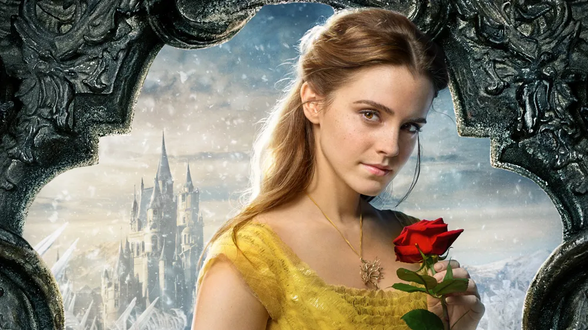
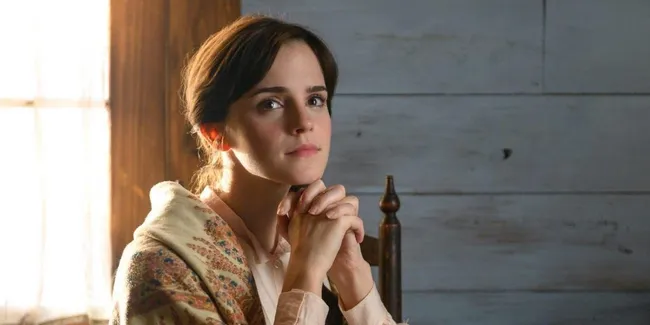
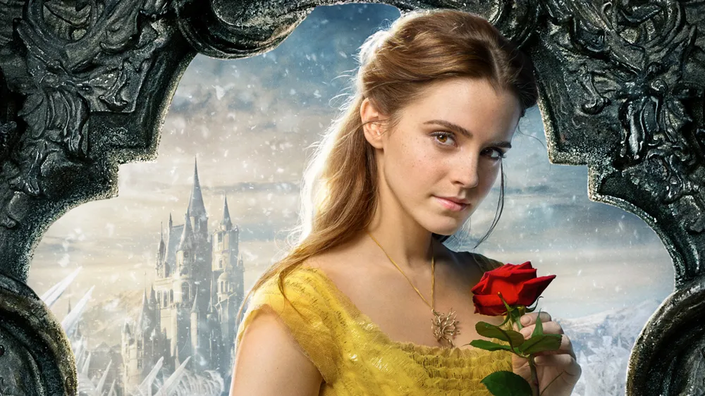
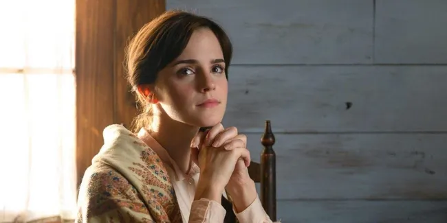

Emma Watson is a talented actress, known for her portrayal of Hermione Granger in the Harry Potter film series.
Outside of acting, she is an advocate for gender equality and women's rights, serving as a UN Women Goodwill Ambassador.
 



Key Achievements
Named one of TIME magazine's Most Influential People in the World (2015).
Recipient of the Britannia Award for British Artist of the Year (2014).
Honorary Degree from the University of Oxford (2018).
Career and Work
Emma Watson gained worldwide fame for her role as Hermione Granger in the Harry Potter film series, which spanned over a decade.
She has since starred in various films such as "The Perks of Being a Wallflower," "Beauty and the Beast," and "Little Women," showcasing her versatility as an actress.
Additionally, Emma has worked as a model, fashion consultant, and activist, using her platform to promote gender equality and sustainable fashion.
Passion
Beyond her career in the entertainment industry, Emma Watson is passionate about advocating for gender equality.
She launched the HeForShe campaign in 2014, encouraging men to support gender equality, and has spoken at various events and forums on the topic.
Emma Watson as Miss Hermione Granger
In Praise of Hermione Granger: A Nostalgic Tribute to a Timeless Character
As a fan of Emma Watson and her iconic portrayal of Hermione Granger in the Harry Potter series, I can't help but feel an immense sense of nostalgia whenever I think about her character. Hermione Granger is not just a fictional character to me; she's a symbol of intelligence, bravery, and unwavering loyalty.
First and foremost, Hermione's intelligence is awe-inspiring. She's the brightest witch of her age, constantly impressing her peers and teachers with her extensive knowledge and quick thinking. Whether it's brewing Polyjuice Potion or solving complex riddles, Hermione's intellect is unmatched. Her dedication to her studies and thirst for knowledge serve as a constant reminder of the importance of education and critical thinking.
But Hermione is not just book smart; she's also incredibly brave. Despite being Muggle-born in a world dominated by pure-blood wizards, Hermione fearlessly stands up against prejudice and injustice. From standing by Harry and Ron's side in their most dangerous adventures to founding Dumbledore's Army to fight against Voldemort's tyranny, Hermione proves time and time again that courage knows no bounds.
What truly sets Hermione apart, however, is her unwavering loyalty to her friends. She would do anything for Harry and Ron, even if it means risking her own life. Hermione's loyalty extends beyond her inner circle; she fights for the rights of house-elves, stands up against the Ministry of Magic's oppressive laws, and advocates for equality in the wizarding world.
Emma Watson's portrayal of Hermione Granger brought the character to life in a way that resonated with millions of fans around the world. Her talent, grace, and dedication to the role are evident in every scene, making Hermione a beloved and unforgettable character.
As a fan, I will forever cherish Hermione Granger and the impact she has had on my life. She taught me the importance of knowledge, courage, and friendship, and for that, I will always be grateful to both J.K. Rowling for creating such a remarkable character and to Emma Watson for bringing her to life with such passion and sincerity. Hermione Granger will forever hold a special place in my heart, and the Harry Potter series will always be a source of nostalgia and inspiration for me.